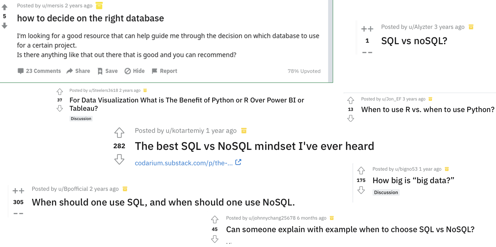
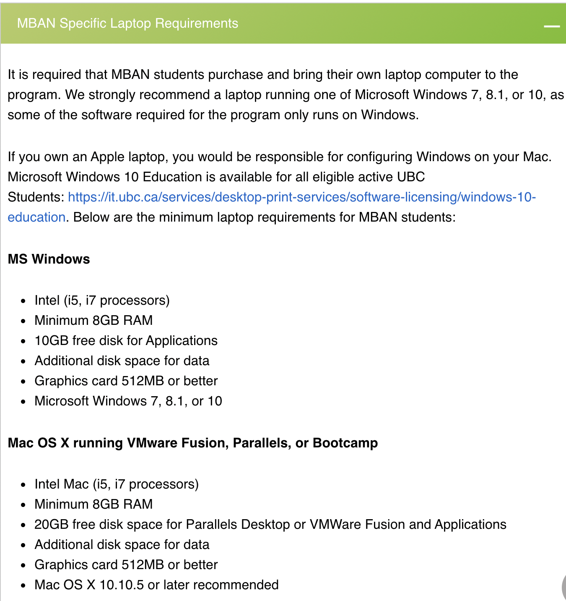
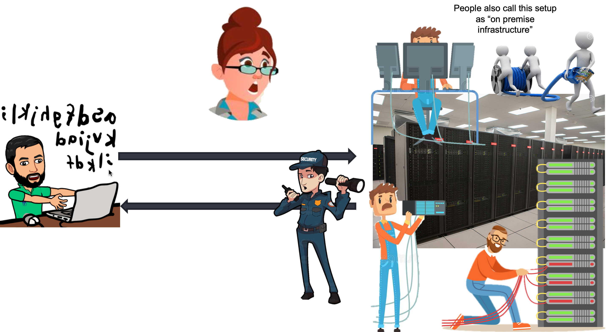

Lecture 1: Data Management in a Big Data Environment#
Gittu George, January 3 2023
Todays Agenda#
Formal introduction to big data
Intro to cloud computing – WHAT ?, WHY ?, HOW?
General overview on services available in AWS (Amazon web services)
Various database services available in AWS
Details on RDS - Relational Database Service
Demo
Learning objectives#
You will understand how database management systems can be optimized for big data applications
You will understand how the axes of big data (the 3Vs) apply to databases
You will understand how the questions you ask affect the tools needed for data analysis
Have a general understanding of cloud computing and help you get started.
Let’s hear a story on ‘it Depends.’#
You probably might have come across many questions like this in Reddit or StackOverflow.
You probably want to check out these questions and answers,1,2,3,4,5,6,7 to see what they are talking about. Reading these questions and answers is interesting, but before thinking about all these technologies, you have to first think about the problem in your hand. If you have a clear understanding of the business problem in hand and list down all the features of your problem, you can list out the pros and cons of using one technology over another.
So which technology should I use?
It all boils down to it depends on your business problem. Let me take you through some of the Depends.
Dependson the output you needInteractive or static graphs?
Integrated reports, tables, websites?
For yourself, for your company, for the public?
Dependson the data you useOne large file, many small files?
Use the whole file at once or in small chunks?
Is data static (cold) or dynamic (hot)
Dependson the question(s) you are trying to askIs it high value?
Are they complex (OLAP) or simple (OLTP)
Do you need results quickly?
For yourself, for your company, for the public?
It Depends matters a lot, especially in “Big Data,” as
The costs and benefits are much higher
The impact on a business’s bottom line can be significant
Some of you might be thinking now, how big the data should be for it to be big data ? that too It Depends.
It depends on many V's. Let’s discuss 3 V's in our next section.
3 Vs of Big Data#
Whenever you come across any big-data article, you will hear about V’s. 3V ’s definition was introduced in 2001 by Gartner Inc. analyst Doug Laney. After this, it evolved a lot with many other V’s. Here I will be going through more common 3V’s discussed in today’s industry. The 3 V’s are, broadly speaking, Velocity, Volume, and Variety. These were introduced to help understand the challenges of Big Data in computing and analytics. The concepts are broadly applicable across all disciplines—for example, check what my colleague wrote about big data in Ecology. Various datasets or problems are affected differently by each of the different axes, so understanding the different dimensions of big data is critical to finding the analytic solutions we intend to apply.
Source: Farley, Dawson, Goring & Williams, Ecography, 2018 Open Access
Other people have spoken about five Vs (Value), seven Vs (adding Variability, Visualization and Value), and even more. If you want to know more V’s ( 42 of them ) and add your vocabulary, you can check out this article. These additional V’s can be informative, but, by and large, the Four V’s provide the most insight into data challenges.
Let’s checkout 3 V’s in detail.
Volume#
When we think about “Big Data, ” this is often the most familiar dimension. We think of Big Data in terms of gigabytes, terabytes, or petabytes. The volume presents a significant challenge for data storage, although modern technology has reduced this challenge to some degree. It also produces a challenge for recall (simply finding information) and for data processing (transforming and analyzing data). Here are the pointers to look out for:
How big is the data?
Total File Size
Number of Data Points
Volume Solutions#
Cloud storage solutions
But in most cases, it’s not just about storing your data; it’s more about how you will process the data. Then there will be limitations by read-write access or/and memory capacity.
Partitioning/Sharding
We must look at this from different angles, partitioning/sharding from a database perspective, which we will touch upon later in this course. Another option is to go for distributed file system where it stores data in small blocks so that it’s easy to process when needed.
Parallel processing
Small chunks of files can be processed simultaneously by using different servers/cores and aggregate results at the end. This is mainly made possible in the industry by high-performance/cluster computing or other map-reduce-based frameworks like Hadoop/spark.
Velocity#
Velocity is a second factor. We may be interested in only the most recent data, minutes or seconds, requiring low volumes of data, but at a high velocity. For example, quant traders might be using high-frequency stock data to maximize trading profits. This involves analysis with extremely fast turnover. Here are the pointers to look out for:
How fast is the data arriving?
Annual data from Stats Can?
Real-time data from stock tickers or Twitter?
How fast do we need our answers?
Monthly or annual strategy planning?
Real-time commodities purchasing?
How fast is the data changing?
Changing interpretations?
Velocity Solutions#
Agile development.
BASE databases (Basically available).
Modular analytics & fault tolerance.
Identify “Key Performance Indicators”.
Develop real-time reporting.
Split the data into hot (Redis , RAM) and cold data (RDBMS, Disk Storage).
Variety#
When we bring in multiple data sources or build data lakes, how well do data fields align? Are temporal scales aligned? Are addresses, zip codes, census tracts, or electoral districts aligned with other spatial data? Are financial values in standard units? If not, how do we transform the values to account for fluctuating exchange rates? Here are the pointers to look out for
How different is the data source?
Are data coming from multiple sources?
Do fields in sources align well?
Do files have similar formatting?
How different are the data structures?
Can the data work in a relational model?
Do we need multiple data models?
Variety Solutions#
Normalize using multiple data sources.
Clear interface layers (structured based on velocity and volume).
Different management systems (RDBMS & Graph DB).
The 3 V’s and Analytic Workflows#
These challenges come to the forefront when we’re working with data. The goto standard is to open up an Excel or read in a comma-separated file to look at the data, get a sense of what is happening, or summarise the key elements.
When that file is <10MB in size, that’s often not a big problem, but as files get bigger and bigger, even calculating a simple mean is an issue (Volume).
When the data contains text, images, values in different currencies, summary becomes problematic (Variety)
When the 10MB you just summarized are out-of-date, as soon as you’re done outlining them, how do you present these results to your colleagues? (Velocity)
Problem Based Approaches#
Many of these challenges have straightforward(ish) solutions, but how we apply those solutions and our choices are often specific to the problem we are trying to answer. For example, a common solution people present to Volume is to use a NoSQL database to store and index information. This is an appropriate solution in many cases; however, most data is well suited to relational databases, and these often provide advantages over non-relational databases.
One of the most important steps in choosing how to set up your analytic workflow is the proper framing of your question. This will help you understand:
What data sources do you need ?
How you will transform that data ?
How you will represent your data ?
To summarize, when is big data appropriate? Depends on:
Velocity, Volume, and Variety
When traditional tools begin to fail
If analysis crashes your computer (laptop)
Processing#
Bring just what is needed to memory (
usecols,dtype,working on individual files,chunksize)Parallel processingso that pieces of files can be processed at the same time. (packages like arrow does all these for you)
The local solutions are applicable everywhere, but when we get to a much larger data set, then these techniques alone won’t help. Hence we wanted to learn about scale-UP and scale-OUT solutions.
Approaches for big data#
Scale UP#
With cloud computing, a scale-UP solution is just one click away; before the rise of cloud computing, it was considered very difficult as it had to be done in an on-premise setup. As a student, you can think about buying a new 32 GB RAM laptop when things don’t work anymore in your 16 GB laptop. You can, of course, think about all the difficulties involved in it.
Even though a scale-UP solution sounds easy with cloud computing, it might not be appropriate in many situations, especially when dealing with big data. Here are some of the disadvantages you can think of with a scale-UP solution.
No default high availability
Single point failure
Server upgrade can be tricky (I agree with cloud computing, it is easy !)
No upper limit with hardware capacity
Downtime related to upgrade
Scale OUT#
Add more computers so that it behaves as a single machine. Many scale OUT solutions are available, like cluster computer, High Performance Computing (HPC), Hadoop, Spark etc… Our focus will be on the Scale UP solution. In our last class on special topics, I will briefly touch upon some more details on the scale OUT solution.
To summarize; A scale-UP solution makes more sense when thinking about just an individual working on some data on a research project. However, looking from a large scale or an enterprise solution standpoint, a scale-UP solution is not a great option in most cases as there is always an expectation of huge and steady growth in data in the long run. So, let’s get into the details of a scale-OUT solution.
Adding some advantages related to the scale-OUT solution;
Scale-out is easy - as you want to add servers when the load is high, and you can remove servers when the load is less.
You can make use of distributed frameworks and it’s advantages for processing
Here is a diagram that shows the difference in scale-UP and scale-OUT solutions.

Intro to cloud computing#
Let me tell you a short cloud-computing tale. This story starts from a computer that you all are familiar with. By the end of this tale, you will answer WHAT, WHY & HOW cloud computing.
Here is the computer that I am talking about:
OKAY! So now we all agreed to call monitor as the client and that box as server. Now let’s take this knowledge to a bigger picture or think about how this idea will be when you start working in the industry.

Collectively we call these servers data centers ( you can also hear people calling some other names like on-premise infrastructure). Mostly all companies (may be used to as there is this trend of moving to cloud) have data centers, which is considered a company powerhouse for powering data needs (like storage, processing, etc.)
If you want to check out more on those gigantic data centers. Checkout here
Let me pause and take a minute to answer this question:
Clicker 1#
{kind=link}
Now that you understand this client-server model, let’s look inside these data centers to see which parties are involved.
Class activity 1#
List down in your notes about the labor costs:
List down costs other than labor cost:
With cloud computing, we are bringing down most of the costs you listed now. Look how neat and clean the diagram below is as cloud providers are taking care of most of the responsibilities that we discussed and using their infrastructure servers as services.
I hope by now you can formulate an answer for questions WHAT, WHY, and HOW cloud computing.
WHAT? Cloud Computing is when we get a server in the cloud for our compute, storage, databases, and network services provided to users via the internet.
WHY? Save lots of money that otherwise need to spend for on-premise infrastructure, and I don’t want to worry about infrastructure and can focus on your analysis right from day1.
HOW? Some cloud vendors provide infrastructure as a service by taking care of all the responsibilities that otherwise need to be done on-premise.
Benefits of cloud computing:#
Trade capital expense for variable expense
Massive economies of scale
Stop guessing capacity
Increase speed and agility
Stop spending money on running and maintaining data centers
Go global in minutes
Source: aws
Cloud providers#
Amazon Web Services (AWS)
Microsoft Azure
Google Cloud
Category of services available in AWS#
Compute
EC2 – Elastic Cloud Compute
Storage
EBS - Elastic Block Storage
S3 - Simple Storage Service
Database
Source: dbtest
Database (Amazon RDS)#
Relational database service (RDS) provides a simple way to provision, create, and scale a relational database within AWS.
Managed service – AWS takes responsibility for the administrative tasks
Following database engines are supported
Amazon Aurora
PostgreSQL
MySQL
MariaDB
Oracle Database
SQL Server
For a list of entire services and details, check out here
Ways to interact with AWS#
-
A web-based GUI provides the capability to interact with the services within AWS.
A good blog here explains various ways of interaction.
Demo#
Let’s together explore AWS
Sign up for AWS Academy
Logging into your AWS console
Navigating in the console
{kind=link}
Note
You can checkout these instructions on setting up your AWS instance.
Can you?#
Define what Big data is in a more formal way ?
List down various dimensions of Big data?
2 general approaches taken for big data ?
WHAT, WHY, and HOW cloud computing is made possible ?
Set up your AWS account and navigate to various services ?
Class activity 2#
Note
Check worksheet 1 in canvas for detailed instructions on activity and submission instructions.
Setup your AWS account
Navigate to various services